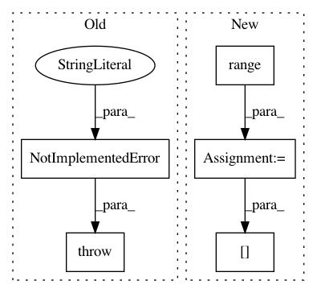

e9c5be365179c1ffe32c0dfb7c8dc3d589a07b04,skmultiflow/classification/lazy/knn.py,KNN,partial_fit,#KNN#Any#Any#Any#,47
Before Change
return self
def partial_fit(self, X, y, classes=None):
raise NotImplementedError("The partial fit is not implemented for this module.")
def predict(self, X):
r, c = 1, 1
After Change
if self.window is None:
self.window = InstanceWindow(max_size=self.max_window_size)
for i in range(r):
if r > 1:
self.window.add_element(np.asarray([X[i]]), np.asarray([[y[i]]]))
else:
self.window.add_element(np.asarray([X[i]]), np.asarray([[y[i]]]))
return self
def reset(self):
self.window = None
In pattern: SUPERPATTERN
Frequency: 4
Non-data size: 5
Instances
Project Name: scikit-multiflow/scikit-multiflow
Commit Name: e9c5be365179c1ffe32c0dfb7c8dc3d589a07b04
Time: 2017-07-20
Author: guilhermekmatsumoto@gmail.com
File Name: skmultiflow/classification/lazy/knn.py
Class Name: KNN
Method Name: partial_fit
Project Name: IBM/adversarial-robustness-toolbox
Commit Name: 5ed0c81c75f9360c11c60ed5b4bb367375ebb2bb
Time: 2020-10-30
Author: beat.buesser@ie.ibm.com
File Name: art/defences/preprocessor/jpeg_compression.py
Class Name: JpegCompression
Method Name: __call__
Project Name: deepmipt/DeepPavlov
Commit Name: 76bedc874bc399c4171086d7fce4121e3fc8f860
Time: 2017-12-07
Author: yoptar@gmail.com
File Name: deeppavlov/data/dataset.py
Class Name: Dataset
Method Name: batch_generator
Project Name: mil-tokyo/webdnn
Commit Name: d5f6b10ccb9112bc5247faf89e5f4bcf3f524f5a
Time: 2017-11-30
Author: y.kikura@gmail.com
File Name: src/graph_transpiler/webdnn/frontend/chainer/functions/array.py
Class Name:
Method Name: _convert_swapaxes